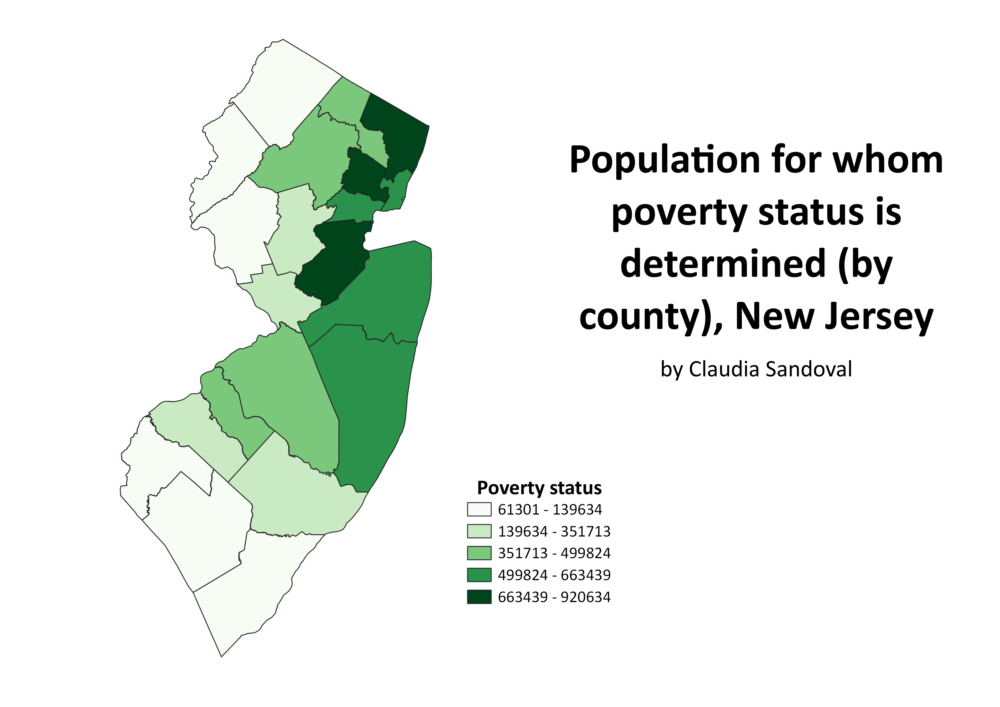

Homework 6: Census data choropleth
Claudia Sandoval
This choropleth shows the proportion of the population in New Jersey, by county, that classify as having a poverty status. The gradient below corresponds to the concentration of those in poverty by county. The darker the color green, the larger the population of those determined to be in poverty.

Data used for this project
CSV dataset
Link to shapefile